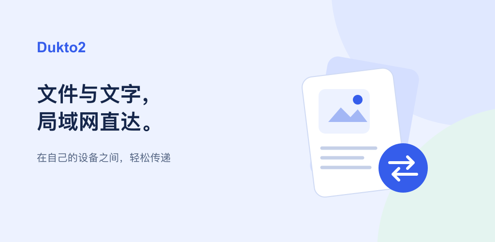

先准备 Android APK 与桌面包的体验介绍。以下文案、图片与隐私说明均未向社区或商店提交。

商店材料
中英文简介、图标和功能图。Google Play 等待账号审核后继续。
中文商店文案 · 字段清单隐私与数据
区分局域网通信、本机数据与 Android 扫码 SDK 的诊断行为。
中文隐私稿 · 数据核对表Android 真机原始截图
截图为 REDMI K90 上现有 0.1.6+7 开发构建，保留原始分辨率和真实测试记录。它们用于国内社区草稿，不能据此认定 rc.2 安装包已完成全套真机验收，也不属于已按 Google Play 画幅规范重拍的图片。